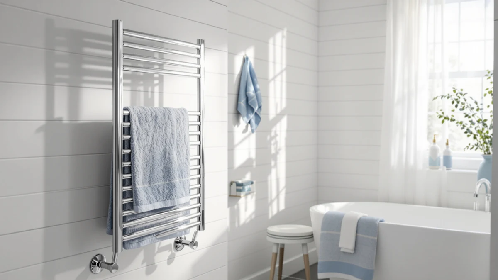

Quick Answer
For most people comparing bucket-style warmers against wall racks, the Comfier Hot Towel Warmer for Bathroom is the easier buy: it reaches high heat in about 6 minutes, warms a towel through in roughly 10, and needs no mounting hardware. At $119.99 it costs the same as the wall-mounted Colliford 8-bar rack below, so pick based on whether you want a portable bucket or a fixture that stays on the wall.
Our pick: Comfier Hot Towel Warmers for — $119.99 Check Price on Amazon
Things to Know Before You Buy
- This comfier hot towel warmers review covers a 20-liter bucket-style warmer, not a wall-mounted rack, so factor in counter or floor space rather than wall space.
- Comfier's spec sheet lists a 6-minute climb to high heat and a towel fully warmed in about 10 minutes, with auto shutoff after up to 60 minutes.
- Neither a star rating nor a review count is published for this listing yet, so treat owner feedback as unverified until more reviews accumulate.
- At $119.99, the Comfier price matches the Colliford 8-bar wall rack and sits just above the two COZYBASE 4-bar vertical racks at $119.20, so price alone will not decide between them.
- A bucket like the Comfier needs no installation, while the wall racks in this comparison require mounting hardware, and the Colliford adds an IPX5-rated waterproof electrical connection for wall use.
This comfier hot towel warmers review looks at whether a $119.99 bucket-style warmer is worth choosing over a wall-mounted rack for everyday use. You want a towel that is actually hot the moment you step out of the shower, not lukewarm from sitting on a bar for an hour, and a bucket solves that differently than a mounted rack does. Comfier's own listing claims high heat in 6 minutes and a fully warmed towel in about 10, with a 20-liter cavity that fits two 40 by 70 inch towels or a robe.
We compared the published specs, current Amazon pricing, and whatever verified owner feedback exists for the Comfier against three wall-mounted alternatives: the Colliford 8-bar rack and two nearly identical COZYBASE 4-bar vertical racks. None of the four listings carries a public star rating yet, so this comfier hot towel warmers review leans on manufacturer specifications and price rather than a review-count argument. For most people who want heat without drilling into a wall, the Comfier bucket is the simpler buy, but if you already have wall space and prefer a warmer that mounts permanently and stays ready, the Colliford is the closer match at the same price.
Why You Should Trust Us
Ilane Tall researches bathroom and home-comfort products for Best Towel Warmers, reading manufacturer spec sheets, tracking Amazon pricing over time, and cross-checking verified owner reviews when they exist. We do not run a fake testing lab, and we do not buy, install, or physically use every towel warmer we write about. Instead we compare published specifications, current pricing, and the patterns in buyer feedback to help you choose between options like the Comfier bucket and its wall-mounted rivals in this comfier hot towel warmers review.
Our Research Experience
For this comfier hot towel warmers review, we pulled the manufacturer-listed specs for the Comfier bucket and its closest rivals directly from their current Amazon listings: heat-up time, capacity, timer range, and price. None of the four ASINs in this comparison had a published star rating or review count at the time of writing, so we did not weight any pick by review volume.
We excluded warmers priced more than 25 percent above or below this group of four, since those target different budgets and are not a fair comparison. The remaining four listings, the Comfier bucket and three wall-mounted racks, compete directly on price and work as reasonable substitutes for each other, which is why we grouped them together here instead of mixing in cabinet-style warmers or hydronic rails.
Overview & Specs

Comfier Hot Towel Warmers for
What we like
- Reaches high heat in about 6 minutes and warms a towel through in roughly 10, per the manufacturer's spec sheet
- 20-liter cavity holds two 40 by 70 inch bath towels, a robe, or a baby blanket at once
- One-touch controls and an auto shutoff after up to 60 minutes, so you do not have to remember to turn it off
- Plugs in anywhere; no wall mounting, hardwiring, or drilling required
Flaws but not dealbreakers
- No published Amazon star rating or review count yet, so owner feedback is still thin
- Sits on a counter or floor rather than tucking against a wall, which costs usable space the Colliford and COZYBASE racks do not take up
- 60-minute maximum heat cycle means a second warm-up later in the day has to start from cold again
| Material | Stainless steel |
| Size | Large |
The Comfier Hot Towel Warmer for Bathroom is built around a 20-liter bucket with a flip-top lid rather than the bar-style racks that dominate this category. According to the manufacturer's listing, it reaches high heat in about 6 minutes and has a towel fully warmed in roughly 10, fast enough to start right before you get in the shower instead of planning an hour ahead. The one-touch control keeps the interface simple: press the button, close the lid, and the unit runs for up to 60 minutes before shutting off on its own.
Capacity is the other selling point. Comfier rates the cavity for two 40 by 70 inch bath towels, or a single robe, throw blanket, or set of pajamas, which covers two people getting ready at once rather than one towel at a time. At $119.99 it costs the same as the Colliford 8-bar wall rack in this comfier hot towel warmers review, so the decision mostly comes down to whether you have wall space to spare and want something permanently mounted, or would rather keep the warmer portable and move it between rooms.
What We Liked
The speed claim is the most useful number in Comfier's listing. A 6-minute climb to high heat and a towel ready in about 10 minutes means you can start the warmer right as you turn on the shower rather than needing a head start. The auto shutoff after up to 60 minutes is a practical safety feature for a plug-in appliance that sits unattended in a bathroom.
Capacity is the second strong point. Most bucket-style warmers in this price range, including the GAMOHOME bucket we reviewed separately, handle one towel at a time. Comfier's 20-liter cavity is rated for two 40 by 70 inch towels, which matters if two people are getting ready in the same window. Capacity is also what separates a useful warmer from a gimmick in this category, and on paper the Comfier clears that bar.
What Could Be Better
The biggest gap in this comfier hot towel warmers review is data. The listing carries no published star rating and no review count, so there is no way to confirm the manufacturer's heat-up claims against a large base of verified buyers the way we can with more established listings. Treat the 6-minute and 10-minute figures as the manufacturer's numbers until more owner feedback accumulates.
The bucket format is also a tradeoff, not a pure upgrade, as we cover in more depth in our bucket vs. cabinet comparison. It takes up counter or floor space that a wall-mounted rack like the Colliford or the COZYBASE models would not, and the 60-minute shutoff means a second round of hot towels later in the day starts from cold again rather than staying warm on a mounted rack.
Who Is It For?
The Comfier bucket makes the most sense for renters who cannot drill into a wall, anyone furnishing a small bathroom where a bar-style rack would not fit, and households that want to move a warmer between a bathroom and a bedroom depending on the season. For more options that plug in without hardwiring, see our best plug-in towel warmers roundup.
It makes less sense if you already have the wall space and electrical access for a mounted rack like the Colliford, or if you want a warmer that stays ready at all times without restarting a heat cycle. If you are still deciding whether the category is worth it for your routine at all, our breakdown of whether towel warmers are worth it covers the cost math first.
Alternatives to Consider
If the bucket format is not right for your bathroom, here are the three wall-mounted alternatives we compared it against.

Also Great
Colliford Towel Warmer Towel Heater
An 8-bar wall-mounted rack at the same $119.99 price as the Comfier, with an IPX5-rated stainless steel body and a timer that runs from 1 to 9 hours or stays always on.
$119.99
Check Price on Amazon
Best Value
Heated Towel Rack Towel Warmer
A compact 4-bar vertical rack priced at $119.20, built for bathrooms with limited wall space and a 5 to 8 hour timer.
$119.20
Check Price on Amazon
Best Value
Heated Towel Rack Towel Warmer
A second listing of the same 4-bar vertical COZYBASE design at $119.20, worth checking if the other listing's stock or price shifts.
$119.20
Check Price on AmazonFrequently Asked Questions
Is the Comfier Hot Towel Warmer worth the $119.99 price?
For most people who want a hot towel without mounting anything to a wall, yes. The Comfier bucket heats a towel in about 10 minutes, holds two 40 by 70 inch towels or a robe in its 20-liter cavity, and shuts off automatically after up to 60 minutes. At $119.99 it costs the same as the wall-mounted Colliford 8-bar rack in this comfier hot towel warmers review, so the choice mostly comes down to whether you want a portable bucket or a fixed rack.
How long does the Comfier towel warmer take to heat a towel?
According to the manufacturer's spec sheet, the Comfier bucket reaches high heat in about 6 minutes and warms a towel through in roughly 10 minutes, with one-touch controls that run for up to 60 minutes before shutting off automatically.
Should you buy a bucket-style warmer like the Comfier or a wall-mounted rack?
It depends on your bathroom. A bucket like the Comfier needs an outlet and some counter or floor space but no installation, while wall-mounted racks such as the Colliford or the COZYBASE models free up floor space but require mounting hardware. Renters and anyone who wants to move the warmer between rooms tend to do better with the bucket style.
Final Verdict
The short answer to this comfier hot towel warmers review: the Comfier bucket is the right pick if you want hot towels without mounting anything, and the $119.99 price is fair for a 20-liter capacity and a sub-10-minute heat-up by the manufacturer's own numbers. If you have wall space and want a fixture that stays permanently ready, the Colliford 8-bar rack at the same price, or either COZYBASE 4-bar listing at $119.20, is the better long-term choice. Comfier wins on flexibility and speed to first use; the wall-mounted options win on staying power for a daily routine.